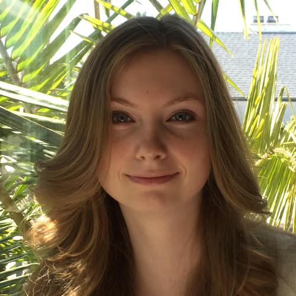

inspiring enthusiasm for Computer Science a lecture series brought to you by UCSB CS undergraduates
Undergrad Alumni Panel Participants
Alex AllenAt Illumina, Alex works on a team responsible for writing the instrumentation software to control gene sequencers. Illumina's instruments are being used all over the world for everything from forensics to cancer diagnosis. Alex's team is supporting their research and development efforts and investigating new technology to bring to the sequencing world. |
Sarah Feldman
Sarah works with Tesla's Supply Chain Director, leading big data analytics that increase efficiency and optimization of global operations. This crosses a number of disciplines in statistics, data engineering, and full-stack database architecture. In addition to her work at Tesla, Sarah is also spearheading Silicon Valley's Women Who Code, Data Science organization. |
Christian Rivera
At Procore, Christian works with a specialized team of Backend/Frontend/UX Designers to continually improve the core tools provided by his Company. Christian focuses on the frontend for his team, creating and improving components used across all of Procore's teams/tools. |
Jared Roesch
Jared graduated from UCSB in 2015 and is now a Ph.D. candidate in Computer Science & Engineering at the University of Washington. He is currently working on tools for specifying and building low-level systems with a focus on security and correctness. Previously he has worked as a web developer in Santa Barbara, and on the Rust programming language at Mozilla. |